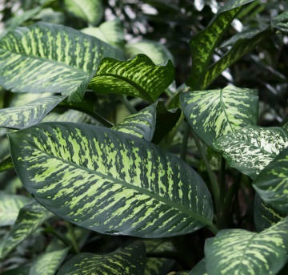

AGLONEMA
Aglonema adalah tanaman hias populer yang berasal dari daerah tropis Asia Tenggara. Tanaman ini dikenal karena daunnya yang indah, berwarna-warni, dan coraknya yang menarik. Daun Aglonema berbentuk memanjang dan tumbuh secara melingkar di sekitar batangnya. Ukuran daunnya bervariasi, tetapi umumnya cukup lebar dengan tepi yang rata atau sedikit bergelombang. Warna daunnya sangat beragam, mulai dari hijau gelap, hijau terang, hingga nuansa merah, merah muda, dan putih.